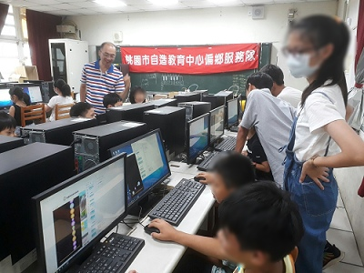
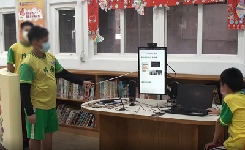
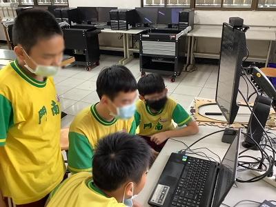
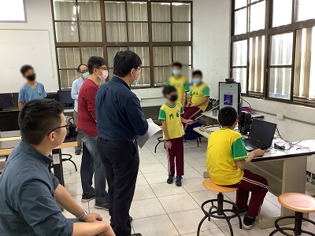
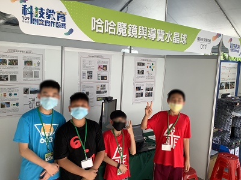
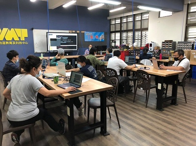
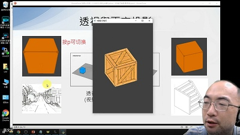
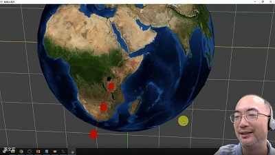
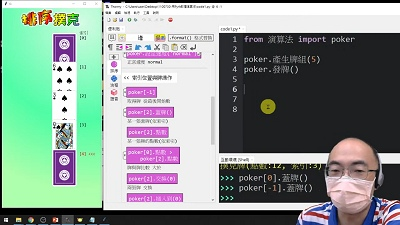
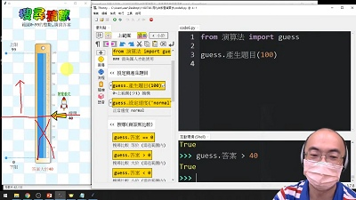

💙 活動紀錄
🧑2021年Py4t推廣紀錄
| 日期 | 單位或活動 | 形式 | 時數 | 內容 |
|---|---|---|---|---|
| 2021-04-17 | 109學年度科技教育 創意實作競賽 國小資訊科技應用組佳作 |
創意實作競賽 | --- | 用Py4t製作 哈哈魔鏡與導覽水晶球 |
| 2021-05-05 | 桃園市建國 自造教育及科技中心 |
教師研習 | 3小時 | 教青少年寫python 攝影機與視覺影像程式 |
| 2021-05-12 | 新竹縣博愛 自造教育及科技中心 |
教師研習 | 3小時 | Python與Microbit程式設計 數位聲音訊號入門與實作 |
| 2021-05-26 | 桃園市建國 自造教育及科技中心 |
線上教師研習 | 3小時 | 教青少年寫python 3D程式與迷你麥塊實作 |
| 2021-06-18 | 桃園市建國 自造教育及科技中心 |
科技教育嘉年華 線上成果展 |
30分鐘 | 教青少年寫Python Py4t的開發構想與軟體展示 |
| 2021-07 | 桃園市立桃園高級中學 吳老師 |
暑期銜接課程 | --- | 108新課綱 資訊科技銜接課程 海龜幾何繪圖與視覺影像 |
| 2021-07-23 | 臺北市新興 自造教育及科技中心 |
線上教師研習 | 3小時 | 用Py4t學Python 3D程式與影像處理 |
| 2021-07-27 | 新竹縣博愛 自造教育及科技中心 |
線上教師研習 | 3小時 | 教青少年寫python 3D程式與迷你麥塊實作 |
| 2021-07-30 | 臺北市新興 自造教育及科技中心 |
線上教師研習 | 3小時 | 用Py4t教懂演算法 排序撲克與搜尋猜數 |
| 2021-09-14 | 新北市國民教育輔導團 國中科技領域 |
線上增能研習 | 2小時 | 圖形化程式語言到文字型 教學工具分享 |
| 2021-10-28 | 臺南市麻豆 自造教育及科技中心 |
教師增能研習 | 6小時 | Scratch導向Python Python與Microbit結合 |
| 2021-11-03 | 新竹縣博愛 自造教育及科技中心 |
教師增能研習 | 3小時 | Py4t演算法教學 |
| 排序撲克與搜尋猜數 | ||||
| 2021-11-13 | 桃園市龜山區大埔國小 | 學生創客營隊 | 6小時 | 3D列印與Python程式設計 |
👩2020年Py4t推廣紀錄
| 日期 | 單位或活動 | 形式 | 時數 | 內容 |
|---|---|---|---|---|
| 2020-06-10 | 桃園市建國 自造教育及科技中心 |
教師研習 | 3小時 | Python程式語言入門 |
| 2020-07-17 | 桃園市觀音區樹林國小 | 學生創客營隊 | 1小時 | Py4t物理碰撞教學 |
| 2020-07-22 | 桃園市復興區介壽國小 | 學生創客營隊 | 1小時 | Py4t物理碰撞教學 |
| 2020-07-27 | 雲林縣斗六 自造教育及科技中心 |
參訪交流活動 | 30分鐘 | Py4t的介紹與實施簡報 |
| 2020-11-04 | 新竹縣博愛 自造教育及科技中心 |
教師研習 | 3小時 | 數學幾何繪圖 與物理碰撞模擬 |
| 2020-11-11 | 新竹縣博愛 自造教育及科技中心 |
教師研習 | 3小時 | 視窗自動化、影像處理 與chrome小恐龍機器人 |
👩學生創客營隊
於學生創客營隊中，實施Py4t體驗活動，雖然只有用到短暫的時間，但是利用Py4t有趣的物理碰撞模組，讓學生體驗Python程式。
| 學生創客營隊 | 活動照片 |
|---|---|
|  | |
 |
 |
👩創意實作競賽
利用Py4t的視覺、3D與語音模組，製作哈哈魔鏡與導覽水晶球作品，參加科技教育創意實作競賽
| 創意實作競賽 | 活動照片 |
|---|---|
|  |  |
|  |  |
🧑線上成果展
配合桃園市建國自造教育及科技中心，在科技教育嘉年華線上成果展中簡報Py4t的開發現況、模組展示與未來方向
| 線上成果展 | 活動照片 |
|---|---|
 |
 |
🧑實體教師研習
從教師研習中，講解與實作Py4t程式，與老師面對面的交流，聽取軟體使用回饋。
| 實體教師研習 | 活動照片 |
|---|---|
|  |  |
 |
 |
👩線上教師研習
因疫情關係，教師研習改採線上方式，雖不能面對面交流，但是能有更多人參與和試用與課程錄影紀錄，也是辦理推廣研習的好方式。
| 線上教師研習 | 活動照片 |
|---|---|
|  |  |
|  |  |